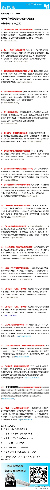

//@龚文祥:【破拆运营：再谈网站运营那点事】“如何理解网站运营”，收到很多用户私信，大部分说虽理解了运营这件鸟事，但还是有点懵懂，希望我再延展开来：➊运营的发展演变➋再谈网站运营概念➌产品和运营究竟是什么关系➍运营最大的敌人是什么？➎运营最害怕的事情是什么？网页链接@触电报微博:1月18号触电报——周末电商干货专题By@派代网官方：1、【从骆驼代言人营销，看传播玩法的进化】 2、【2014，你拿什么成就爆款？】 3、【数据模型为您揭秘电商盈利的核心所在】 4、【2014年淘宝新变革预测】。。。本期编辑：@李立夏，链接：January18，2014——周末电商干货专题By@派代网官方 

 January18，2014——周末电商干货专题By@派代网官方
January18，2014——周末电商干货专题By@派代网官方